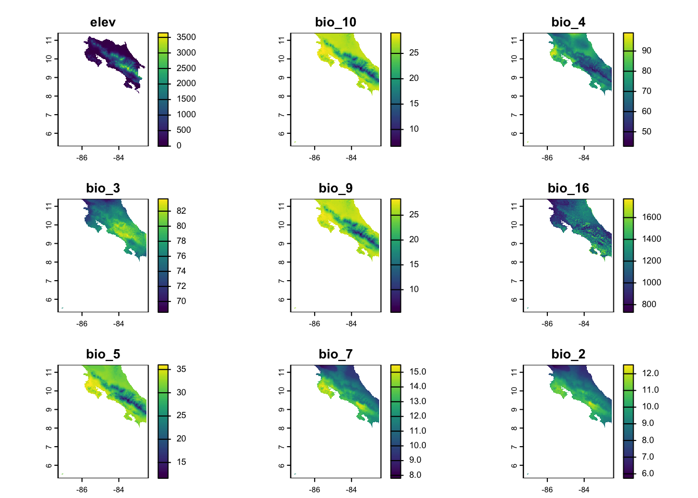

── Attaching core tidyverse packages ──────────────────────── tidyverse 2.0.0 ──
✔ dplyr 1.1.4 ✔ readr 2.1.5
✔ forcats 1.0.1 ✔ stringr 1.5.2
✔ ggplot2 4.0.0 ✔ tibble 3.3.0
✔ lubridate 1.9.4 ✔ tidyr 1.3.1
✔ purrr 1.1.0
── Conflicts ────────────────────────────────────────── tidyverse_conflicts() ──
✖ dplyr::filter() masks stats::filter()
✖ dplyr::lag() masks stats::lag()
ℹ Use the conflicted package (<http://conflicted.r-lib.org/>) to force all conflicts to become errors
Code
library(terra)
terra 1.8.70
Attaching package: 'terra'
The following object is masked from 'package:tidyr':
extract
Code
library(geodata)library(tidyterra)
Attaching package: 'tidyterra'
The following object is masked from 'package:stats':
filter
Code
library(caret)
Loading required package: lattice
Attaching package: 'caret'
The following object is masked from 'package:purrr':
lift
Getting Started
This exercise is going to rely on simulated data so you don’t need to join a repository. You’ll just need to get our credentials and login to a new RStudio session. I’m using simulation because one of the best ways to test out whether you’ve specified your model correctly is to simulate the process with known coefficients. If your statistical model returns those values, then, assuming you’ve simulated a reasonable generating process, you should be able to trust that the model you fit is actually doing what you want it to.
Get the Data
Code
elevation <- geodata::elevation_30s(country ="CRI", path =tempdir())climate <- geodata::worldclim_country(country ="CRI", var ="bio", res =0.5, path =tempdir())names(climate) <-str_extract(names(climate), "bio_\\d+")names(elevation) <-"elev"climate_df <-as.data.frame(climate, na.rm=TRUE)climate_subset <- climate[[sample(1:nlyr(climate),size =8)]]climate_aligned <-resample(climate_subset, elevation)# Stack the predictorspredictors <-c(elevation, climate_aligned)plot(predictors)

Generate a sample
Code
set.seed(123)n_points <-750# Sample random locations from the study areasample_points <-spatSample(elevation, size = n_points, method ="random", na.rm =TRUE, xy =TRUE, values =FALSE)# Extract environmental values at these pointsenv_values <- terra::extract(predictors, sample_points)species_data <-tibble(x = sample_points[,1],y = sample_points[,2]) %>%bind_cols(env_values) %>%drop_na() # Remove any NA valuesspecies_data_scl <- species_data %>%mutate(across(colnames(env_values), ~as.numeric(scale(.x))))
Specify predictors
Code
K <-nlyr(predictors)gen_predictors <-function(K, style =c("random", "correlated"), K_corr =NULL, rho =NULL){if(style =="random"){ preds <-runif(n=K, min =-3, max =3) }else{if (is.null(K_corr) |is.null(rho)) {stop("You selected method = 'correlated', so you must supply values for K_corr and rho") }# build correlation matrix for correlated block Sigma <-matrix(rho, nrow = K_corr, ncol = K_corr)diag(Sigma) <-1# generate correlated variables corr_preds <- MASS::mvrnorm(n =1, mu =rep(0, K_corr), Sigma = Sigma) random_preds <-runif(n=(K-K_corr), min =-3, max =3) preds <-sample(c(corr_preds, random_preds)) }return(preds)} known_betas <-gen_predictors(K=9, style ="correlated", K_corr =4, rho=0.7)